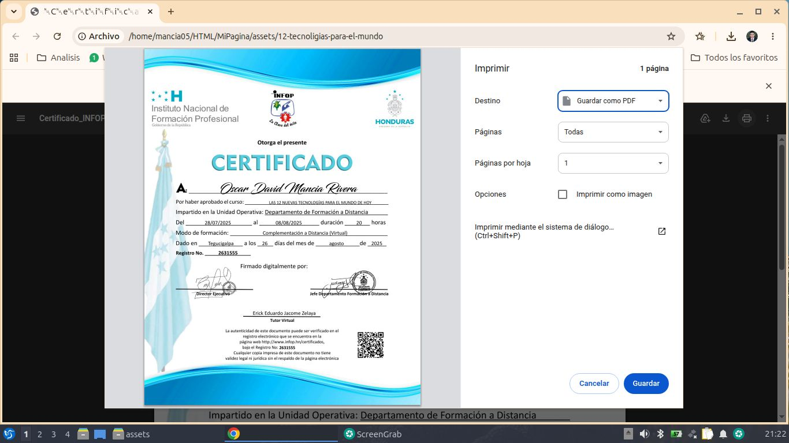

Con experiencia en la gestión, análisis y digitalización de datos aplicados al sector agroindustrial (APROCAJER). Con un fuerte enfoque en el desarrollo de software, la arquitectura de bases de datos y la automatización de procesos mediante soluciones tecnológicas eficientes que optimizan la toma de decisiones.
Asi como experiencia en campo mediante levantamiento de poligonos y formularios, creacion de kml, diseño de mapas y análisis de datos geoespaciales, disño web y diseño de contenido digital "Viñetas, anuncios".

Python (FastAPI), C++, PHP, JavaScript.
MySQL, phpMyAdmin, gestión de registros y respaldos.
Garmin eTrex (GPS/SIG), Excel avanzado (VBA), Lubuntu Linux.
HTML5, CSS3, Git, GitHub y control de versiones.
APROCAJER | Noviembre 2026 - Agosto 2026
Sistematización y control de calidad de datos en bases físicas y digitales para una cartera de más de 600 productores. Uso de herramientas SIG y monitoreo satelital para análisis de deforestación y georreferenciación.
Proyectos de Automatización
Despliegue y configuración de portales corporativos usando GitHub Pages, administración de entornos DNS y gestión de licenciamientos empresariales en la nube.
| Certificación Técnica | Código de Registro | Emisión |
|---|---|---|
| Administración de Base de Datos MySQL | 2745945 | Mayo 2026 |
| Diseño Web con HTML 5 y WordPress | 2602821 | Junio 2025 |
| Programación en Arduino | 2628263 | Julio 2025 |
| Microsoft Excel Avanzado | 2648522 | Sept 2025 |
| Etica Profesional | 2648522 | Sept 2025 |
| Curso de Rain Forest Alliance | Estandar | Emisión |
|---|---|---|
| Rain Forest Alliance (SAS42) | Estandar de Agricultura Sostenible | Agosto 2026 |
| Rain Forest Alliance (EAR41) | Estandar de Agricultura Regenerativa | Agosto 2025 |
| Curso de Fairt Trade | Código de Registro | Emisión |
|---|---|---|
| Indicador | N/A | Agosto 2026 |
| Curso de Organico USDA Y EU | Código de Registro | Emisión |
|---|---|---|
| Indicador | N/A | Agosto 2026 |
| Curso C.A.F.E. Practices | Version | Emisión |
|---|---|---|
| Indicador | N/A | Agosto 2026 |